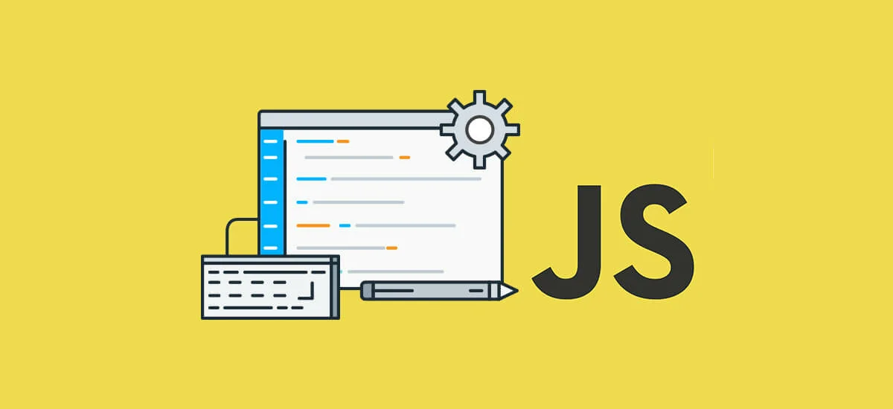
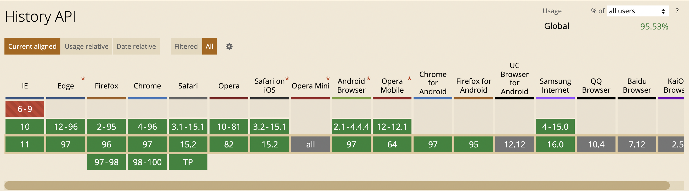
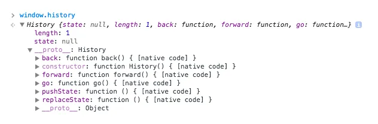
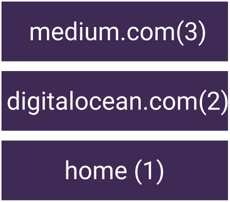
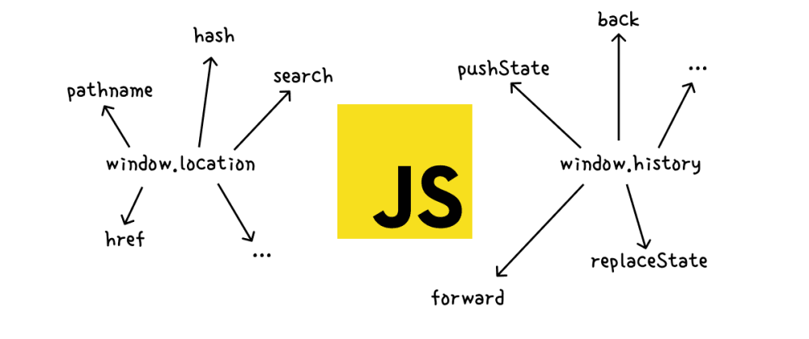
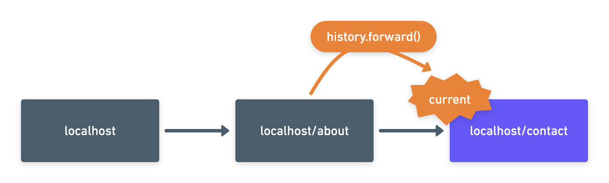
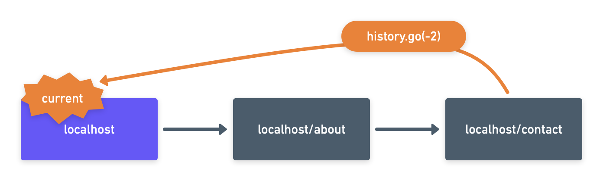
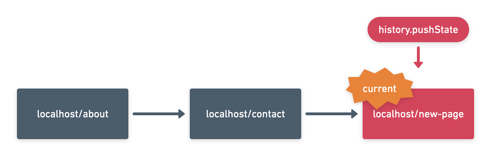
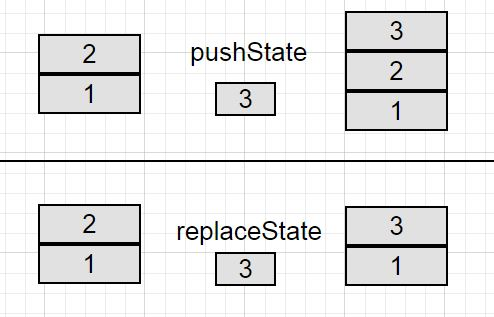

API stands for application programming interface. APIs are the little pieces of code that make it possible for digital devices, software applications, and data servers to talk with each other, and they’re the essential backbone of so many services we now rely on.
What are APIs used for?
-
Lots and lots and lots of things, including:
- APIs power desktop applications.
- APIs are behind most web applications.
- APIs make mobile applications possible.
- APIs are the integrations for no code solutions
- APIs connect devices to the internet.
- APIs define the networks—or the information passed between applications, systems, and devices and other
There are such available APIs
- Background Fetch API
- Background Tasks
- Bluetooth API
- Canvas API
- Clipboard API
Let's talk in more details about History API 
Fortunately, there’s an easy solution. We’ve had a History API that lets add to the history list and react to back and forward navigation.
Browser support
To programmatically determine if an API is supported, use:
return !!(window.history && history.pushState);
Basics
To check out the features of this API it’s as simple as heading into the Developer Tools and typing history into the console. If the API is supported in your browser of choice then we’ll find a host of methods attached to this object:
Broken Back button syndrome
In the old days a web page did one thing—display information. When you wanted to look at something else, you clicked a link and went to a new URL. As JavaScript grew more powerful, developers realized that every web page could be a complete application.
The problem was the the Back and Forward buttons in the browser didn’t fit this new application model. For example, a user might perform a sequence of tasks in a single-page web application and then expect to use the Back button to go back a single step. Instead, the Back button would return to the previous web page, effectively shutting down the JavaScript app in the middle of whatever it was doing. Often, this behavior wasn’t intuitive.
Main methods of the History object:
window.history.length: Number of entries in the current history session
History object contains length properties, which has a number of URL’s in the session history stack, For example, If the user opens a tab in the browser the length of history will be 1 , because the new tab is also a webpage. Then the user enters a URL digitalocean.com and hit enter now the length of history object will be 2 , then users go to another page medium.com, now the length of the history object will be 3 .
window.history.state: Returns the current history object
window.history.go(n): A method to walk through history. The offset relative to the current position is passed as an argument. If 0 is passed, then the current page will be updated. If the index is out of history, then nothing will happen.
window.history.back(): Same method as go(-1)
window.history.forward():Same method as go(1)
window.history.pushState(data, title [, url]):Adds a history element
window.history.replaceState(data, title [, url]): Updates the current history element
Moving back and forward
Imagine our browser’s history as a series of elements: There is always one element, that is our “current” element and it represents the page that we are currently seeing.History example with three pages: Home, About and Contact
The browser does not forget about the other elements, so that we can also go forward and make the next element the “current” one by simple calling the history.forward() method.
.png)
We can even go multiple steps at a time (in either direction) using the history.go() function. If you provide the value 1 it will go forward one element, while calling history.go(-2) will go two elements back.
Conveniently, calling history.go(0) will not go anywhere, and will instead just reload the page.
window.history.pushState(data, title [, url])
The pushState() method is the centerpiece of the History API. It lets you add a new item into the history list for the current page. The trick is that each entry has some state attached with it — a linked piece of information or object that you set. When the user steps back through the history list, you get the corresponding state information so you can return the page to its previous version.
The pushState() method takes three arguments:
Data.
The first argument is any piece of data you want to store to represent the current state of this page.
You’ll use this information to restore the page when the user goes back through the history list.
Title.
The second argument is the page title you want the browser to show. Currently, all browsers are unified in ignoring this detail. (So you can just pass null.)
URL.
The third argument is the new version of the URL that you want to show for the page in the browser’s address bar. This lets you add better support for the Reload button and browser bookmarks.
function nextSlide() {
let slide;
if (currentSlide == 4) {
slide = 1;
} else {
slide = currentSlide + 1;
}
history.pushState(slide, null, null);
goToSlide(slide);
return false;
}
function previousSlide() {
let slide;
if (currentSlide == 1) {
slide = 4;
} else {
slide = currentSlide - 1;
}
history.pushState(slide, null, null);
goToSlide(slide);
return false;
}
window.history.replaceState(data, title [, url])
Another way to change your browser’s history state is to use the replaceState function. It works almost exactly as the pushState method mentioned above. The big difference is, that while pushState will create a new entry in the browser’s history, replaceState will onle replace the current state.
.png)
As a side effect of this, using the replaceState method will change the URL in the address bar, without creating a new history entry. Even though this was not the use case the developers had in mind, you could use this to change the URL in the address bar without any further side effects.
The behavior of the replaceState and pushState methods can be displayed as follows. Let's say we have 2 entries in our history stack (labeled 1 and 2) and we need to add a third one (labeled 3).
When using pushState, the entry is added to the "stack" of entries above the previous ones, while when using replaceState, the last entry (the top one in the "stack") is replaced.